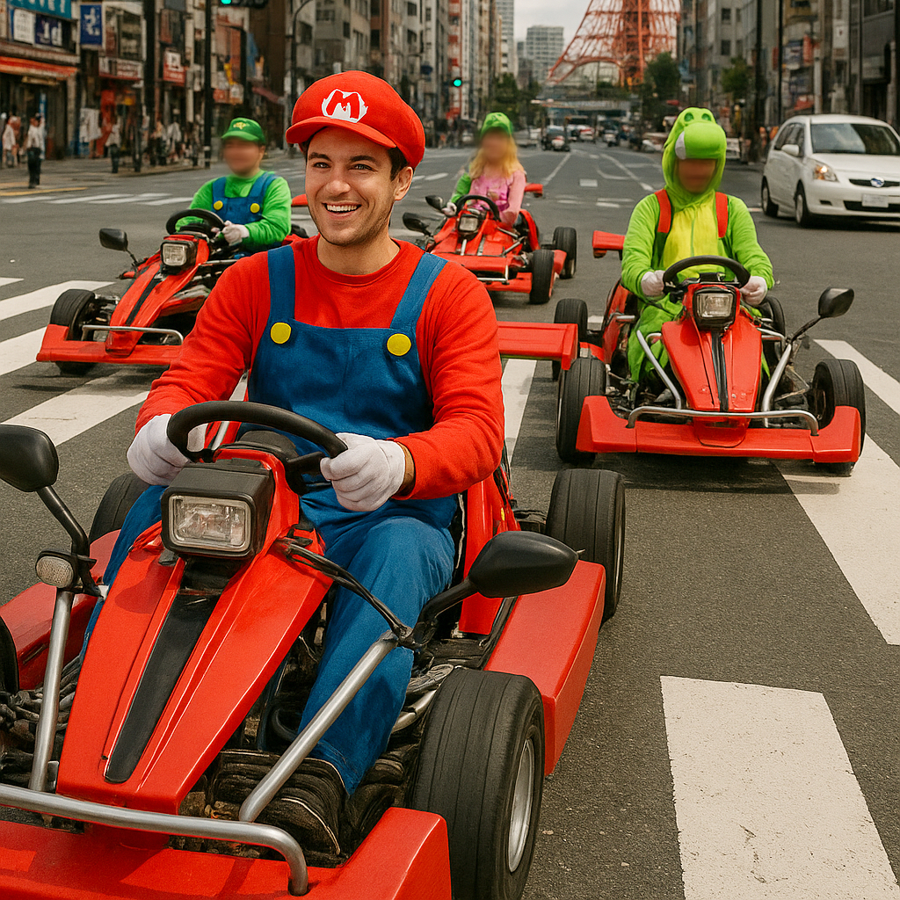

Esperienza di Go-Kart in Giappone – Tour Unici in Kart attraverso le Strade di Tokyo
Vivi l’emozione di guidare un go-kart attraverso le vivaci strade di Tokyo, un modo unico per esplorare la città godendosi al tempo stesso la cultura vibrante del Giappone. I nostri tour in go-kart ti permettono di guidare kart omologati indossando costumi divertenti, combinando visite turistiche e avventura adrenalinica.
Cosa Aspettarsi dai Tour in Go-Kart
I tour offrono un’esperienza sicura ed emozionante, adatta sia ai principianti che ai guidatori esperti. I percorsi attraversano quartieri famosi come Shibuya, Akihabara e Odaiba, offrendoti una visione ravvicinata dell’energia urbana di Tokyo dal volante di un potente go-kart legale su strada.
Veicoli e Misure di Sicurezza
I nostri go-kart sono dotati delle più recenti funzionalità di sicurezza e sono conformi alla legge giapponese. Prima del tour riceverai una formazione completa, casco e attrezzatura protettiva. Guide esperte accompagneranno il gruppo per garantire un’esperienza fluida e sicura lungo tutto il percorso.
Prenotazione e Opzioni di Tour
Sono disponibili tour di diversa durata e itinerari, da brevi giri di un’ora a esperienze di mezza giornata. I tour personalizzabili ti permettono di scegliere il percorso in base ai tuoi interessi come shopping, siti storici o quartieri di intrattenimento. Offriamo anche tour privati per gruppi che desiderano un’esperienza su misura.
Come Partecipare ai Tour in Go-Kart
I tour partono da punti centrali di Tokyo facilmente raggiungibili con i mezzi pubblici, come Shinjuku o Shibuya. È necessario essere in possesso di una patente di guida internazionale o giapponese valida. Si consiglia di prenotare in anticipo, soprattutto nei fine settimana e durante le festività, per assicurarsi un posto e ricevere tutte le indicazioni necessarie.
Perché Scegliere l’Esperienza in Go-Kart?
È un modo irripetibile per scoprire Tokyo da una prospettiva diversa – unendo divertimento, cultura ed emozione. Perfetto per chi cerca l’adrenalina, per turisti alla ricerca di qualcosa di originale o per gruppi che vogliono vivere un’attività memorabile nella capitale giapponese.
Informazioni Utili per i Visitatori
- 🌸 Punti di Partenza: Luoghi d'incontro a Shinjuku, Shibuya o Odaiba
- 🌸 Orari dei Tour: 9:00 – 18:00 (varia in base al tour)
- 🌸 Requisiti: Patente di guida internazionale o giapponese valida
- 🌸 Cosa Portare: Abbigliamento comodo, patente di guida, occhiali da sole
Tag: go-kart Giappone, kart Tokyo, tour di guida Tokyo, visite Tokyo, kart autoguidato Tokyo, esperienze uniche Giappone
Stai pianificando di provare i tour in go-kart in Giappone?
Per vivere un’esperienza immersiva e sicura, ti consigliamo di prenotare una guida privata certificata dal nostro team. Tutte le nostre guide sono professionisti con licenza ufficialmente riconosciuta dal governo giapponese, e offrono tour personalizzati in base ai tuoi interessi. Contatta la tua guida selezionata in anticipo per confermare la disponibilità e ricevere assistenza esperta per il tuo viaggio.